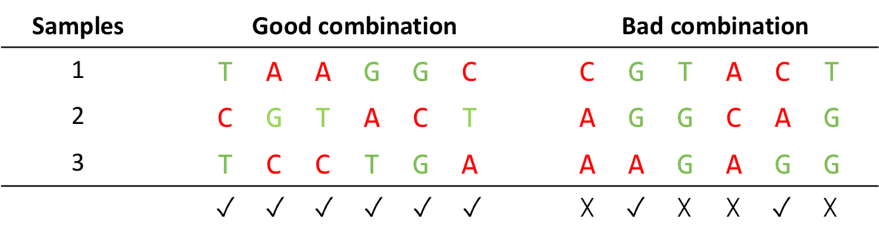

2.d) Sequence-Levenshtein
(SeqLev) distance dSL:
3. Plateform
chemistry constraints
3.a) Overview of Illumina
chemistries
3.b) Illumina compatibility
constraints
3.c) Examples of compatible
and non-compatible combinations
4. Which constraints for which platform?
This
interface is a frontend for the DNABarcodeCompatibility
R-package. This package allows one to
obtain optimized combinations of DNA barcodes to be used for multiplex
sequencing. In each barcode combination, barcodes can be pooled with respect to
Illumina chemistry constraints, distance constraints, or nucleotide composition
constraints. In particular, combinations can be filtered to keep those that are
robust against substitution, insertion/deletion and phaseshift
errors thereby facilitating the demultiplexing step. In addition, the package
provides an optimizer function to further favour the selection of barcode
combinations in which each DNA barcode is used an equal (or near equal) number
of times. Here, we briefly define the constraints in section 2 and 3, and
summarise how to apply them according to the main platforms in section 4.
It is
defined as a repetition of three or more identical adjacent nucleotides in the
barcode.
It
corresponds to the pourcentage of the bases G and C,
that is, the number of nucleotides in the barcode that are either G or C,
divided by the length of the barcode.
The Hamming
distance of two words of equal lengths is defined as the number of letters at
which they differ. For example the Hamming distance between ‘AATGC’ and ‘TATGG’
is 2. This distance is adequate for the correction of substitution errors only.
Let C = (c1,
c2, …, cK) denote a list of
distinct words. The minimum Hamming distance between pairs of words from this
list is denoted by dmin,H(C).
To detect kd
substitution errors, the constraint that needs to be applied on the minimum
Hamming distance reads dH,min(C) ≥ kd +1. This ensures
that no barcode ci from the list can be transformed into
another one cj by applying less
than kd
+ 1 substitutions.
To correct kc
substitution errors, the constraint on the minimum Hamming distance reads dH,min(C) ≥ 2kd +1. This ensures that a barcode ci
read with at most kc substitution errors can be uniquely
recovered as the barcode closest in the Hamming distance from the word that was
read.
This
(pseudo-)distance has been introduced by Tilo Buschmann for the purpose of defining robust constraints
that applies to the DNA context in which barcodes are flanked by other DNA
sequences (Buschmann, 2015). It is closely linked to the
so-called Levenshtein (or edit) distance, which can
be defined as the minimum number of deletions, insertions or substitutions
required to transform a given word into another. See (Buschmann,
2015) for a precise definition. dSL is also implemented in the DNABarcodes
R-package (Buschmann, 2017).
Let C = (c1,
c2, …, cK) denote a list of
distinct words. The minimum SeqLev distance between
pairs of words from this list is denoted by dmin,H(C).
To detect up to kd
insertion, deletion, and substitution errors in the sequencing of a DNA
barcode, one must impose the constraint dSL,min(C) ≥ kd +1.
The correct up to kc insertion,
deletion, and substitution errors in a DNA context, one must impose the
constraint dSL,min(C) ≥ 2kc
+1.
The Phaseshift distance is another distance introduced by Buschmann and implemented in the DNABarcodes
package (Buschmann, 2015). This distance is adapted for the
correction of substitution errors, and also supports the correction of
insertion/deletion errors that may occur at both extremities of the DNA barcode
sequence as seen on Illumina platforms.
Let C = (c1,
c2, …, cK) denote a list of
distinct words. The minimum Phaseshift distance between pairs of words from
this list is denoted by dP,min(C).
To detect up to kd
insertion, deletion, and substitution errors in a DNA context, one must impose
the constraint dP,min(C)
≥ kd +1 .
To correct up to kc insertion,
deletion, and substitution errors in a DNA context, one must impose the
constraint dP,min(C)
≥ 2kc +1 .
The
detection method and subsequent image processing performed by Illumina
platforms have some limitations that require particular sequence compatibility
constraints to be satisfied by combinations of DNA barcode for their
unambiguous sequencing. Illumina platforms are categorised into 3 different
“Illumina chemistries”, each with a specific set of rules for DNA barcode
compatibility.
Figure 1.Illumina chemistry configurations for one,
two, four channels
The
4-channel chemistry stands for 4 different detection colours, one per
nucleotide (see Figure 1). The 2-channel and 1-channel chemistries stand for 2
and 1 detection colours, respectively.
In their
‘Index Adapter Pooling Guide’ (version # 1000000041074 v03, available at
emea.support.illumina.com), Illumina provides guidelines for the design of a
compatible multiplexing strategy for each chemistry configuration, in a
low-plex pooling setting (multiplexing level less than 12) (Index Adapters Pooling Guide). Here are the recommendations found in this
document:
"Selecting the correct index combinations
avoids Index Read failure due to cluster registration failure and improves
accuracy during data analysis. […] It is important to maintain color balance for cycle of Index Read sequencing, otherwise
Index Read sequencing could fail due to registration failure. This base calling
process also ensures accuracy for data analysis.
Follow these low-plex pooling guidelines,
depending on your index adapter component.[...]
Four-Channel
Sequencing
[…] Four-channel sequencing systems capture
four distinct images, which allows cycle-by-cycle observation of which dye is
incorporated into a cluster.
A green laser is used to sequence G and T bases
while a red laser sequences A and C bases. To ensure proper image registration,
each cycle must include reads at least one of two nucleotides per color channel.
The MiSeq system and
all HiSeq systems currently use four-channel
chemistry.
Two-Channel Sequencing
Index Reads must begin with at least one base
other than G in either of the first two cycles. If an Index Read begins with
two base calls of G, signal intensity is not generated and registration fails.
Signal must be present in either of the first two cycles to ensure
demultiplexing performance.
Select combinations of index sequences that
provide signal in at least one channel, preferably both channels, for every
cycle.
Red channel—A or C
Green channel—A or T
Two-channel sequencing simplifies nucleotide
detection because only two images are needed to determine all four base calls.
Instead of using a separate dye for each base, two-channel sequencing uses a
mix of dyes. Clusters with intensity in the red channel are C bases, and
clusters with intensity in the green channel are T base. Clusters with
intensity in both red and green are A base. Unlabeled
clusters are G base.
The NovaSeq, NextSeq, and MiniSeq platforms
use two-channel chemistry. [...]
One-Channel Sequencing
The first two cycles of an index read cannot
start with two G bases, otherwise intensity is not generated. To ensure
demultiplexing performance, intensity must be present in either of the first
two cycles. Make sure that at least one index sequence in a library pool does
not start with two G bases. Select balanced index sequences so that signal is
present in at least one image (preferably both images) for every cycle. The iSeq 100 System uses one-dye sequencing, which requires one
dye and two images to encode data for the four bases. Intensities extracted
from one image and compared to a second image result in four distinct
populations, each corresponding to a nucleotide. Base calling determines which
population each cluster belongs to.”
i) Compatible
and non-compatible barcode combinations for a 4-channel Illumina system
(multiplex level 3).

iii) Compatible and non-compatible barcode combinations for a 1-channel Illumina system (multiplex level 3)
The table
below summarizes the constraints that one should apply for a given platform for
an optimal demultiplexing (Yang et al., 2013; Buschmann, 2015; Shin and
Park, 2016; Pfeiffer et al., 2018). Interesting NGS platform comparisons can be found here: https://genohub.com/ngs-instrument-guide/
Suggestions
by users are welcome and should be submitted to github: https://github.com/comoto-pasteur-fr/DNABarcodeCompatibility/issues
|
Company |
Platform |
Sequencing method |
Dominant error type |
Manufacturer required constraints |
Recommended constraints for optimal demultiplexing |
|
Illumina |
HiSeq, MiSeq |
Sequencing by synthesis |
Substitution |
4-channel compatibility |
·
Homopolymer length < 3 ·
20%-40% GC content range ·
4-channel compatibility ·
Phaseshift distance
(>=3) |
|
Illumina |
NextSeq, NovaSeq, MiniSeq |
Sequencing by synthesis |
Substitution |
2-channel compatibility |
·
Homopolymer length < 3 ·
20%-40% GC content range ·
2-channel compatibility ·
Phaseshift distance
(>=3) |
|
Illumina |
iSeq |
Sequencing by synthesis |
Substitution |
1-channel compatibility |
·
Homopolymer length < 3 ·
20%-40% GC content range ·
1-channel compatibility ·
Phaseshift distance
(>=3) |
|
Life Technologies |
Ion Proton |
Ion semiconductor sequencing |
Insertion/ deletion |
none |
·
Homopolymer length < 3 ·
40%-60% GC content range ·
SeqLev distance
(>=3) |
|
Pacific Biosciences |
Pac Bio |
Single molecule sequencing |
Insertion/ deletion |
none |
|
|
Helicos Biosciences |
Heliscope |
Single molecule sequencing |
Insertion/ deletion |
none |
|
|
Roche |
454 |
Pyrosequencing |
Insertion/ deletion |
none |
References
Buschmann,T.
(2017) DNABarcodes: an R package for the systematic construction of DNA sample
tags. Bioinformatics, 33, 920–922.
Buschmann,T. (2015) The Systematic Design and Application of Robust DNA Barcodes.
Index Adapters Pooling Guide.
Pfeiffer,F. et al. (2018) Systematic evaluation of error rates and causes in
short samples in next-generation sequencing. Scientific Reports, 8,
10950.
Shin,S. and Park,J. (2016) Characterization of
sequence-specific errors in various next-generation sequencing systems. Mol.
BioSyst., 12, 914–922.
Yang,X. et al. (2013) A survey of error-correction methods for
next-generation sequencing. Brief Bioinform, 14,
56–66.